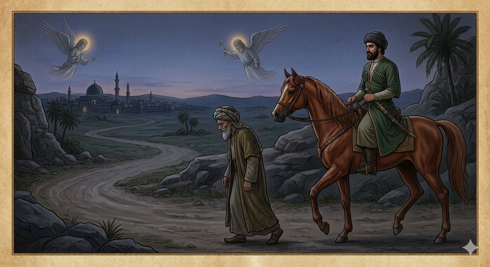

И.А. Дахкильгов. Хьехаме дувцарш - поучительные рассказы-притчи.
И.А. Дахкильгов. Хьехаме дувцарш - поучительные рассказы-притчи. Из ингушского фольклора.

Эздел чӀоагӀа деза лоархӀ
Ший асхьабашка хоам бе нах бахийта хиннаб Мохьмад-пайхамара, кхоанарча Ӏуйранарча ламаза Макка хьаотта йоах шуга, аьнна. Турпал-Ӏаьлийга из хоам баьча хана, цхьанахьа гаьннарча метте хиннав из. Макка кхача геттар кӀезига ха йолаш хиннав. Ший ма хулда ди хаьхка водаш хиннав Турпал-Ӏаьла. Наькъах дӀаводача цхьан воккхача сага тӀехьашка тӀакхийнав из. Барзкъах гуш хиннад из воккха саг бусалба воацалга. Турпал-Ӏаьла бера ханара денан Ӏема хиннавар боккхача наьха сий де, моллагӀаш уж бале а. Цу воккхача сагал хьалхавала эздело вуташ хиннавац из. Ший ди сеца а беш, гӀа боаккхаш цу воккхача сага тӀехьа водаш хиннав. Макка кхача тӀехьавусаш а хиннав. Ишттача боларах ше тӀехьавусаргволга ховш вар Турпал-Ӏаьла, бакъда дего витацар из воккхача сагал хьалхавала. Ший эздел бахьанце Турпал-Ӏаьла ламазе тӀехьавусалга гуш, Джабраил-малейка Макка гулбенна хиннача наьха теркам кхычахьа берзабеш, царга ламаз дицдолийташ хиннад. ХӀаьта Исраил-малейко малх сецабеш хиннаб, Турпал-Ӏаьла дӀакхаччалца хьакхетаргбоацаш. Эзделах ца вохаш а нийсса ламазага кхоачаш а хьаэттар Турпал-Ӏаьла. Иштта чӀоагӀа деза лоархӀаш да эздел. Цул дезагӀа хӀама а дац.
РУССКИЙ
Благородство весьма почитается
Пророк Мухаммед через вестовых начал созывать с разных мест своих сподвижников в Мекку на утреннюю молитву. Богатырь Али находился вдали и от сподвижников, и от самой Мекки. Когда он получил эту весть, у него оставалось мало времени, чтобы домчаться туда. И вот скачет богатырь Али на призыв пророка. Вдруг видит: идет по дороге в сторону Мекки какой-то старик, судя по одежде, не мусульманин, а иноверец. И все же богатырь Али, привыкший почитать старость, не мог обогнать старика. Его благородство не позволяло проскакать вперед, и он весь остаток пути сдерживал коня, ехал шагом позади старика. Разумом Али понимал, что ему необходимо скакать далее, что есть мочи, но величие души никак не позволяло ему этого. Видя, что богатырь Али опаздывает на утреннюю молитву из-за своего благородства, в дело включились ангелы. Ангел Джабраил незаметно стал отвлекать от молитвы внимание всех собравшихся, а ангел Исраил сдерживал солнце, чтобы оно не взошло до приезда Али. Так высоко чтится благородство, и лучше него ничего нет.
ENGLISH
Nobility is held in very high regard
The Prophet Muhammad began, through messengers, to summon his followers from various places to Mecca for the morning prayer. The hero Ali was far away from both his fellow believers and Mecca itself. When he received this news, he had little time left to make his way there. And so the warrior Ali galloped off in response to the Prophet's call. Suddenly he saw an old man walking along the road towards Mecca; judging by his clothes, he was not a Muslim, but a man of another faith. And yet Ali, accustomed to honouring the elderly, could not overtake the old man. His nobility would not allow him to ride past, and for the rest of the journey he held his horse back, riding at a walk behind the old man. In his mind, Ali understood that he needed to ride on as fast as he could, but the greatness of his soul would not allow him to do so. Seeing that the hero Ali was running late for morning prayer because of his nobility, the angels stepped in. The angel Jibril began to discreetly distract everyone gathered from their prayers, whilst the angel Israil held back the sun so that it would not rise before Ali's arrival. Such is the high esteem in which nobility is held; there is nothing better than it.
НОХЧИЙН
ПОГОВОРКИ
Берзо кхераваьр жӀалех веддав. - Напуганный волком бежал от собаки.Говра эцалехьа нувра эца. - Прежде чем покупать коня, купи седло.ДоагӀа мотташ во а дагӀац, дика а дагӀац. - И счастье, и несчастье приходят, когда их не ждешь.ЦӀаьхха шурах йиза бӀийг ловзаийккхай. - Нежданно насытившись молоком, ягненок взыгрался.Ӏовдала саг вира а вовз. - Дурака и ишак узнает.Во дош къорачоа а хоз. - Плохое слово и глухой услышит.Къел-моцал – цхьан юкъа хинна йоачан; майрал-денал – божаргбоаца Башлоам-корта. - Голод и бедность – временная непогода; мужество и смелость – несокрушимый Казбек.Сигала хьал лоаме оттабеннабац, форда тӀа тӀий тулладеннадац. - Лестницу до неба не построишь, мост через море не наведешь.Хьайна мел ховр ма дувца, Ӏайха мел дувцар ха. - Не говори всего, что знаешь, но знай все, а чем говоришь.Хье воаттӀавой а бакъдар мара ма ала. - Хоть и разорвут тебя, говори только правду.